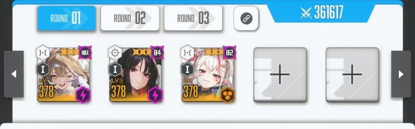
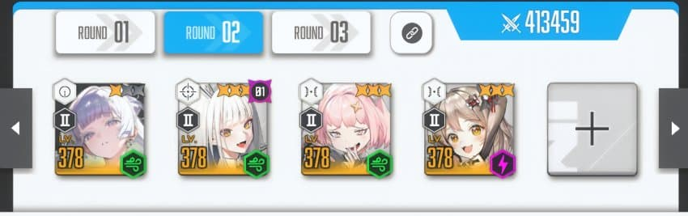
1버스트에는 아니스 목단 자칼
2버스트에는 나유타 블랑 노아 비스킷
이 녀석들이 스레나 덱 편성의 모든 것이자 핵심 파츠임.
이 공략은 '스레나 공략'이기 때문에 베이 같은 경우는 제외했음. 베이는 스레나에서 쓰기엔 현재로썬 애매한 상황임. 아니스가 나오고 나서 목베비스가 퇴물이 되어버리고 베이가 힘이 많이 빠졌기 때문임.
우선 핵심 파츠가 되는 니케들을 소개했으니 이제 덱 편성하는 방법을 알려줄거임. 내가 이 공략을 쓰는 이유는 물고기를 떠먹여주는게 아니라 직접 낚는 법을 알려주고 싶어서임.
공격, 방어 모두 해당하는 공략임.
시작하기 전에 가장 중요한 사실을 말해주자면, 스레나는 결국 2승만 따면 됨. 방어할때도 2번만 막아내면 된다는 거임. 그게 무슨 말이냐? 즉, 2개의 덱에 리소스를 몰아넣고 남은 하나는 적당히 짜면 된다는 얘기임.
이제부터 공략을 시작하겠음
1. 일단 노아, 블랑, 나유타를 넣어
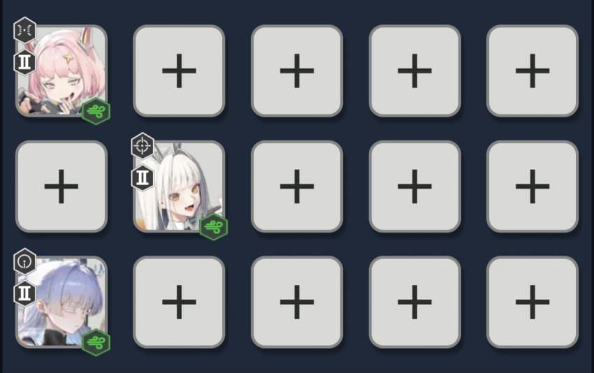
2. 아니스, 목단이 가장 밸류가 높은 1버스트니까 이 녀석들 어디에 붙일지 결정해
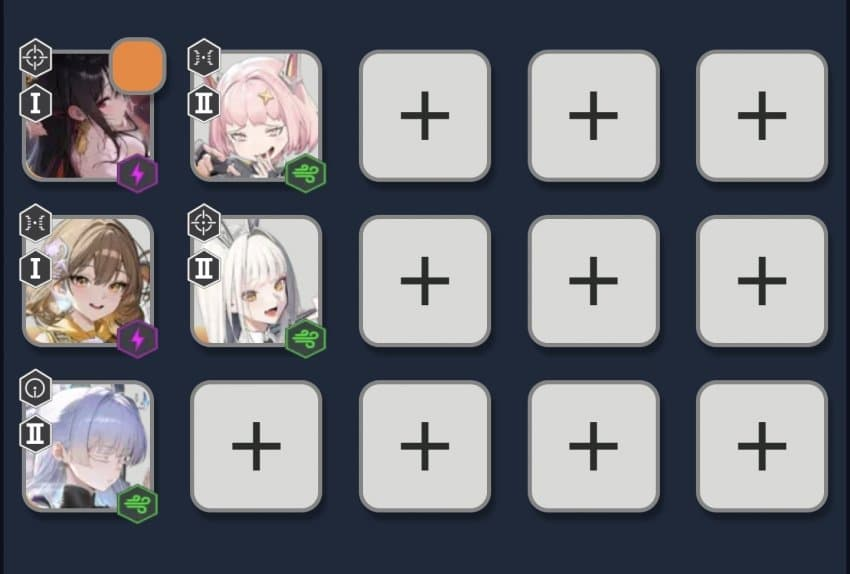
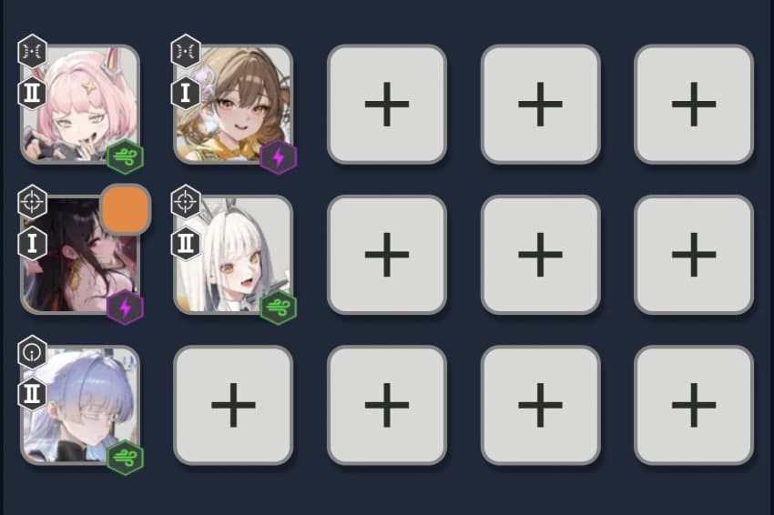
3. 비스킷을 어디에 붙일지 결정해. 비스킷은 방어형 니케의 체력이 50% 미만이 되면 5초간 무적을 부여하는 개사기 니케라서 비스킷을 붙이는 곳이 1군덱이 된다고 생각하면 됨. 그런데 현재 아레나에는 지존 씹사기 언밸런스급 '아니스'가 있기 때문에, 비스킷은 무조건 아니스에게 붙여.
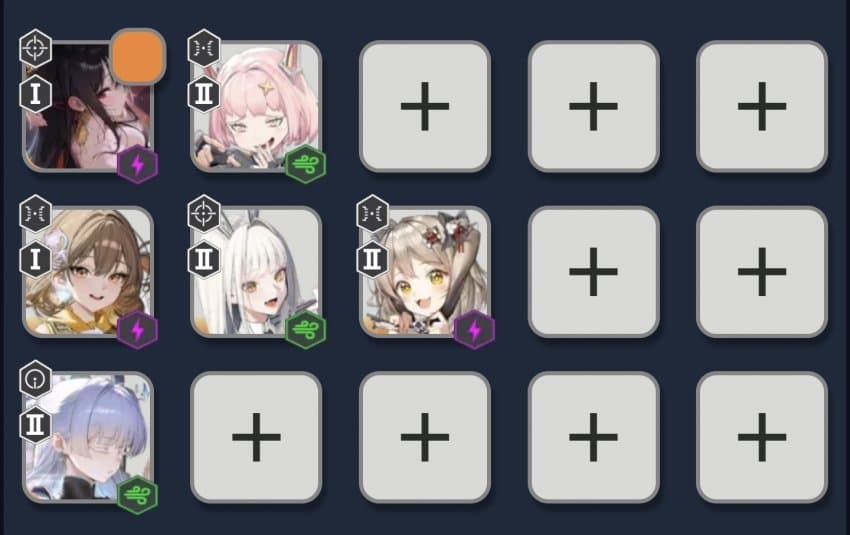
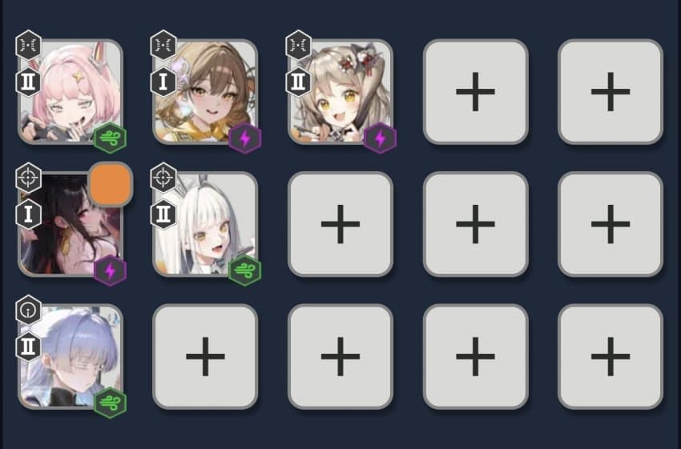
4. 이제 아니스, 목단 조합에 집어넣을 다른 파츠들을 생각해. 3버스트 딜러들을 넣고, 부족한 파츠들을 집어넣어. 기본적으로 블랑은 비스킷을 붙여서 쓰는게 아니라면 자칼이랑 사용해.
덱 예시들을 보여줄게.
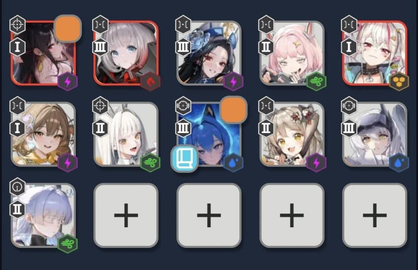
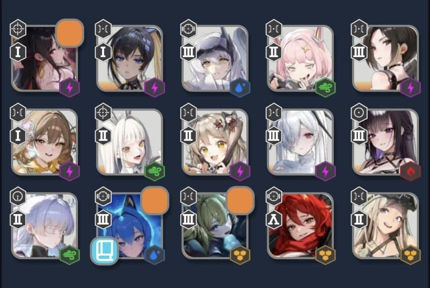
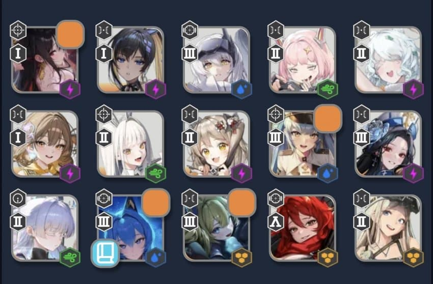
대충 이 정도가 목단 + 노아, 아니스 + 블랑 + 비스킷을 활용한 덱의 예시야. 이런 식으로 조합을 짜는 거라는 걸 알아줬으면 좋겠어. 3번에 비워둔 나유타 조합 같은 경우는 그냥 짬덱으로 사용될거라 비워놨고, 밑에서 짬덱 구성 방법도 알려줄게.
이번엔 아니스 + 노아 + 비스킷, 목단 + 블랑을 활용한 덱의 예시를 보여줄게.
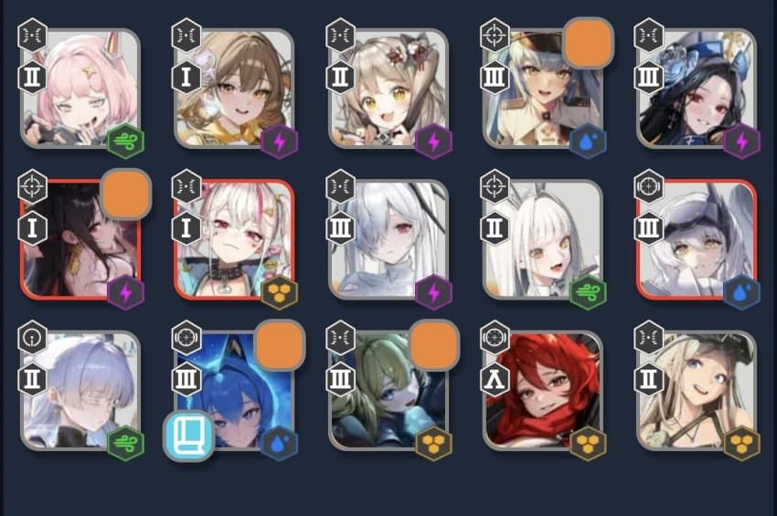
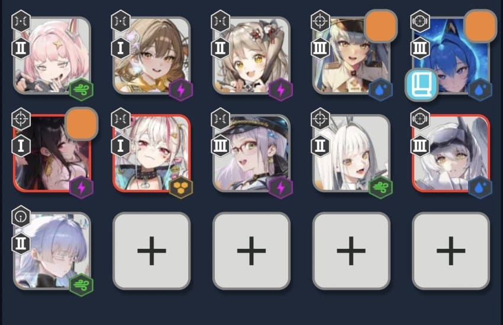
대충 이런 느낌으로 구성하면 됨. 목단 블랑 덱의 핵심은 목단과 스화가 자칼 링크를 받고(공격력이 높은 2인), 스화가 목단, 자칼, 신데(or 네온)보다 체력이 낮게끔 세팅해주면 돼. 체력 큐브 껴서 조절해주면 돼.
어쨌든 이제 기본적으로 2개의 핵심 덱을 구상하는 방법은 알아봤으니, 3번째 짬덱을 어떻게 짜야할지 알려줄게.
5. 짬덱은 일단 투력을 높게 집어넣으면 절반은 간다. 스레나 캐릭을 키워놨으면 남는 파츠들을 몰아넣는다.
끝.
이게 아니스가 들어오고 난 후, 아레나에서 사용 가능한 최신 메타덱을 짜는 방법들임. 챔레나에선 현재 아니스 + 베이 + 비스킷, 아니스 + 노아 + 비스킷, 아니스 + 블랑 + 비스킷 등 다양한 조합들이 사용되면서 연구 중이고, 전시즌에는 아베비를 사용한 사람들이 많이 우승했음.
하지만, 이건 스레나 공략이기 때문에 2덱 몰빵이 가능한 스레나 구조상 이런 식으로 조합을 짜는게 가장 효과적인 방법임.
각자 육성한 니케 풀이 다르기 때문에 나는 덱을 추천해주기보단 덱을 짜는 방법을 알려주고 싶었음.
3줄 요약.
일단 노아, 블랑, 나유타를 분배해서 넣고 아니스, 목단, 자칼을 집어넣어. 비스킷은 아니스에 붙여. 그리고 거기에 적당한 3버스트 니케를 집어넣어.